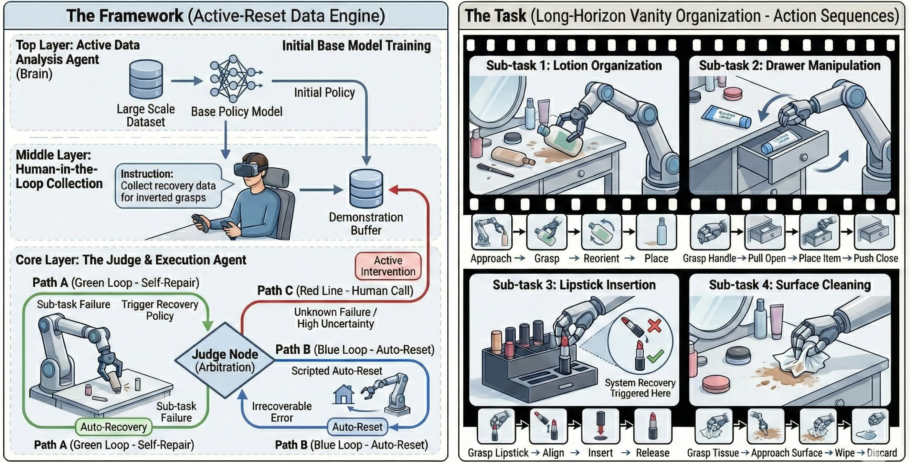
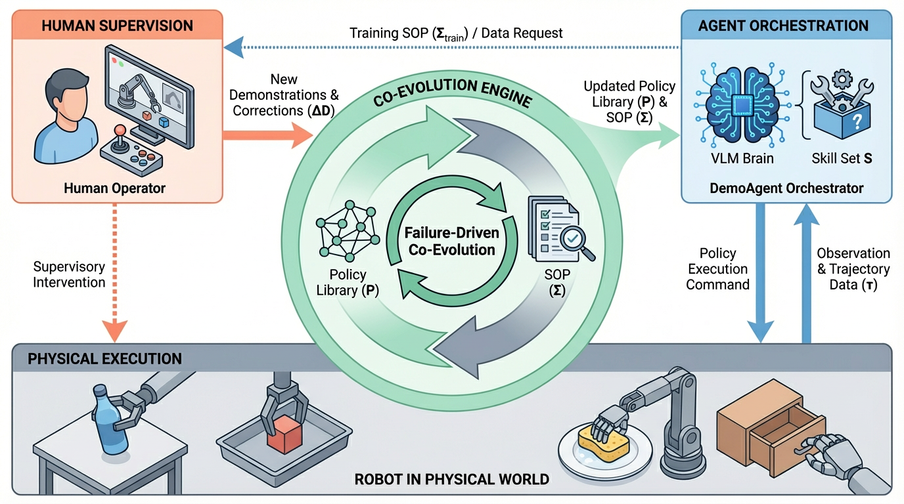
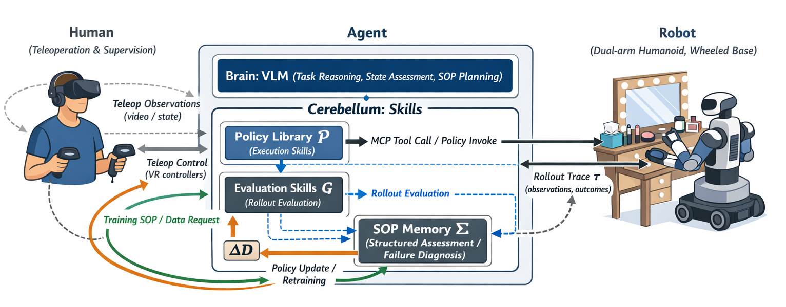
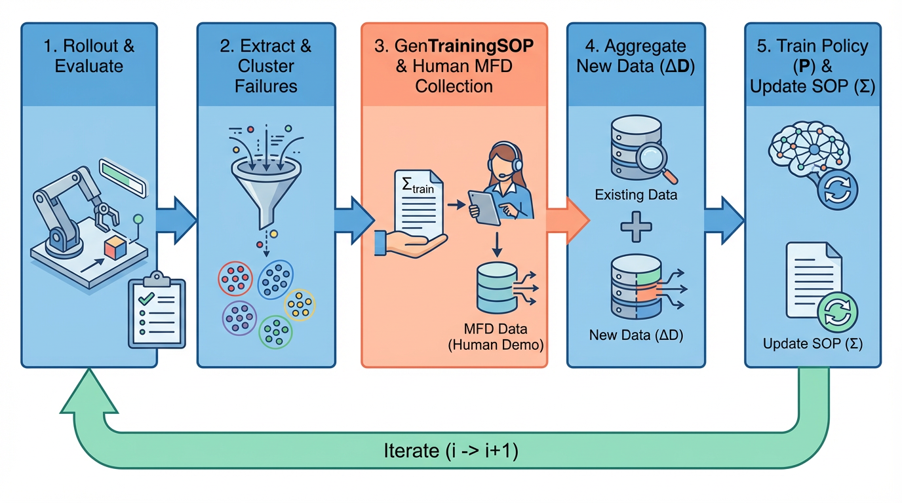

DemoAgent：Agent-in-the-Loop Data Curation from Online Experience for Long-Horizon Manipulation
Abstract
Learning robust policies for long-horizon dexterous manipulation remains a grand challenge. While recent robot foundation models have demonstrated impressive capabilities, they often suffer from brittleness: a single sub-task failure typically leads to the termination of the entire episode. To achieve true robustness, agents must not only mimic expert successes but also learn to recover from inevitable execution errors. However, acquiring such ”recovery data” is notoriously inefficient due to passive collection paradigms and the bottleneck of manual resetting. In this paper, we propose an Agent-in-the-Loop Self-Correcting Data Engine, a unified framework designed to automate the acquisition of high-value recovery behaviors. We introduce two core mechanisms: (1) an automated self-repair and reset loop that allows the robot to autonomously attempt recovery or reset the environment, capturing critical failure-correction transitions without human intervention; and (2) an active intention analyzer that monitors performance distributions to identify failure clusters, querying human operators solely for information-dense edge cases. By dynamically arbitrating between autonomous recovery, automated reset, and human takeover, our framework minimizes human effort while maximizing data utility. Experiments on complex multi-stage tasks demonstrate that our system significantly improves data collection efficiency and yields policies with superior robustness against disturbances compared to state-of-the-art baselines.
Method




Video Gallery
task1 (before Demoagent)
task2 (before Demoagent)
task3 (before Demoagent)
task4 (before Demoagent)
task1 (after Demoagent)
task2 (after Demoagent)
task3 (after Demoagent)
task4 (after Demoagent)
BibTeX
@article{YourPaperKey2024,
title={Your Paper Title Here},
author={First Author and Second Author and Third Author},
journal={Conference/Journal Name},
year={2024},
url={https://your-domain.com/your-project-page}
}